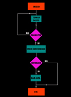

En PHP puedes utilizar variables en cualquier lugar de un programa. Si esa variable aún no existe, la primera vez que se utiliza se reserva espacio para ella. En ese momento, dependiendo del lugar del código en que aparezca, se decide desde qué partes del programa se podrá utilizar esa variable. A esto se le llama visibilidad de la variable.
Si la variable aparece por primera vez dentro de una función, se dice que esa variable es local a la función. Si aparece una asignación fuera de la función, se le considerará una variable distinta. Por ejemplo:
$a = 1;
function prueba()
{
// Dentro de la función no se tiene acceso a la variable $a anterior
$b = $a;
// Por tanto, la variable $a usada en la asignación anterior es una variable nueva
// que no tiene valor asignado (su valor es null)
} Si en la función anterior quisieras utilizar la variable $a externa, podrías hacerlo utilizando la palabra global. De esta forma le dices a PHP que no cree una nueva variable local, sino que utilice la ya existente.
$a = 1;
function prueba()
{
global $a;
$b = $a;
// En este caso se le asigna a $b el valor 1
}Las variables locales a una función desparecen cuando acaba la función y su valor se pierde. Si quisieras mantener el valor de una variable local entre distintas llamadas a la función, deberás declarar la variable como estática utilizando la palabra static.
function contador()
{
static $a=0;
$a++;
// Cada vez que se ejecuta la función, se incrementa el valor de $a
}Las variables estáticas deben inicializarse en la misma sentencia en que se declaran como estáticas. De esta forma, se inicializan sólo la primera vez que se llama a la función.